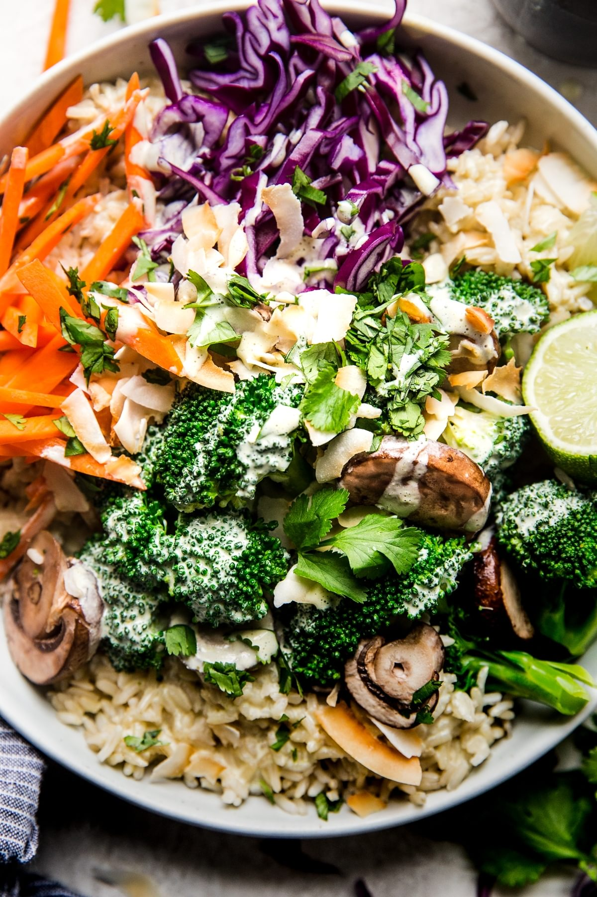
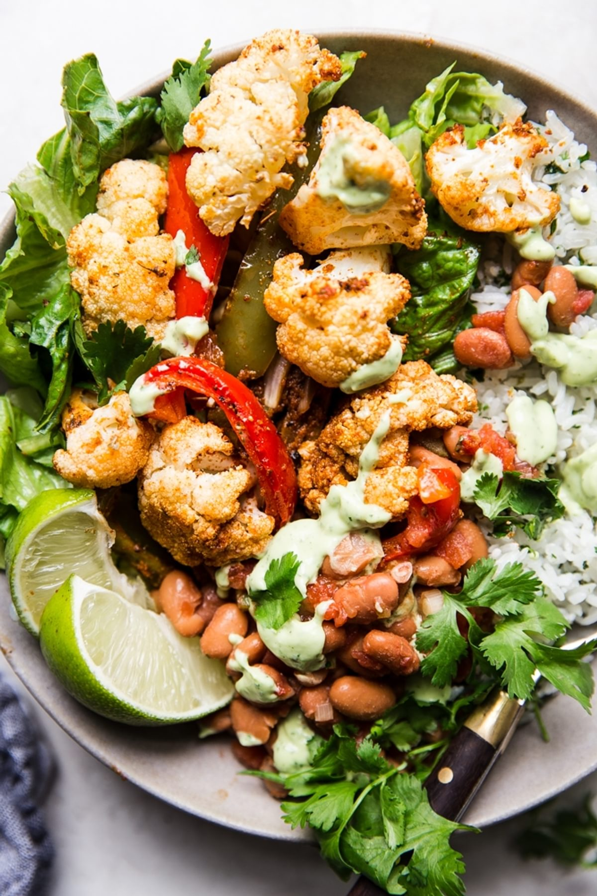
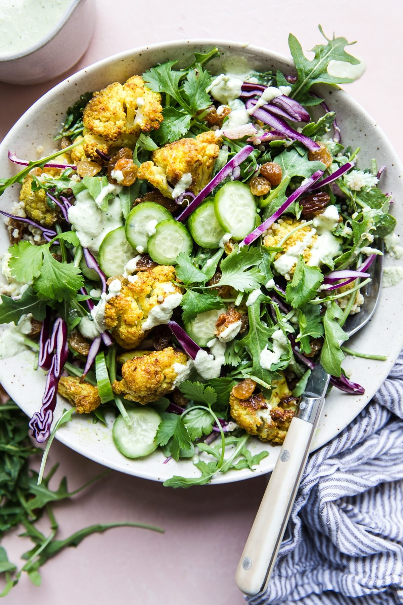

Odin Recipes
Top 3 Vegetarian Meals

Green Curry Buddha Bowl

Vegetarian Burrito Bowl

Curried Cauliflower Quinoa Salad
Green Curry Buddha Bowl
Vegetarian Burrito Bowl
Curried Cauliflower Quinoa Salad